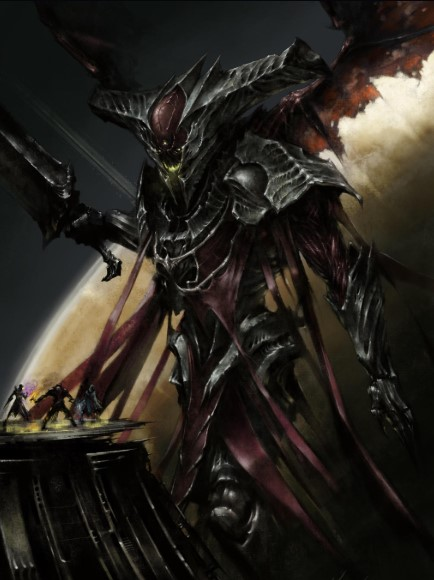
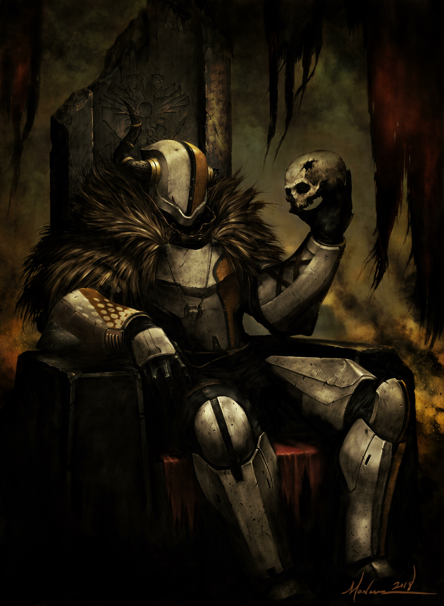
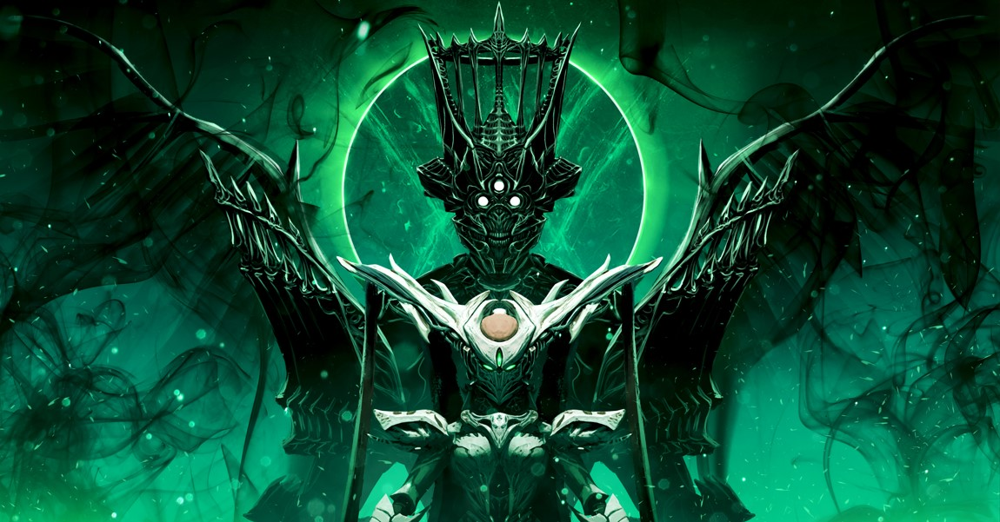
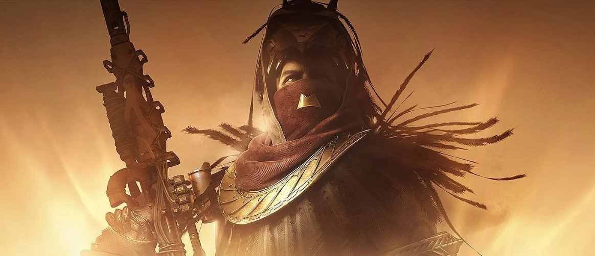

Destiny 2
Personajes del universo Destiny
-

Oryx, Rey de los poseídos
-

Lord Shaxx
-

Savathûn, la Reina Bruja
-

Osiris, hechicero de la Vanguardia
Escritorio: más de 1280 px
Tablet: de 881 a 1280 px
Móvil: hasta 880 px
Explora algunos de los personajes más conocidos de Destiny. El diseño se adapta al tamaño de la pantalla: las cuatro imágenes aparecen en una fila en escritorio, en dos columnas en tablet y una debajo de otra en móvil.